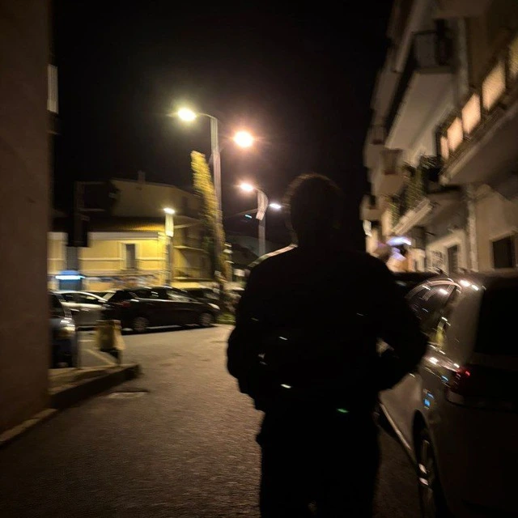

Armando Andreani
Amantea, Italy
Hello. I'm a 18 y.r old guy studying Computer Science.
I love reading books and I like photography.
> $
My experience
Minecraft-Italia.net
2022-2024
HR - Project Management